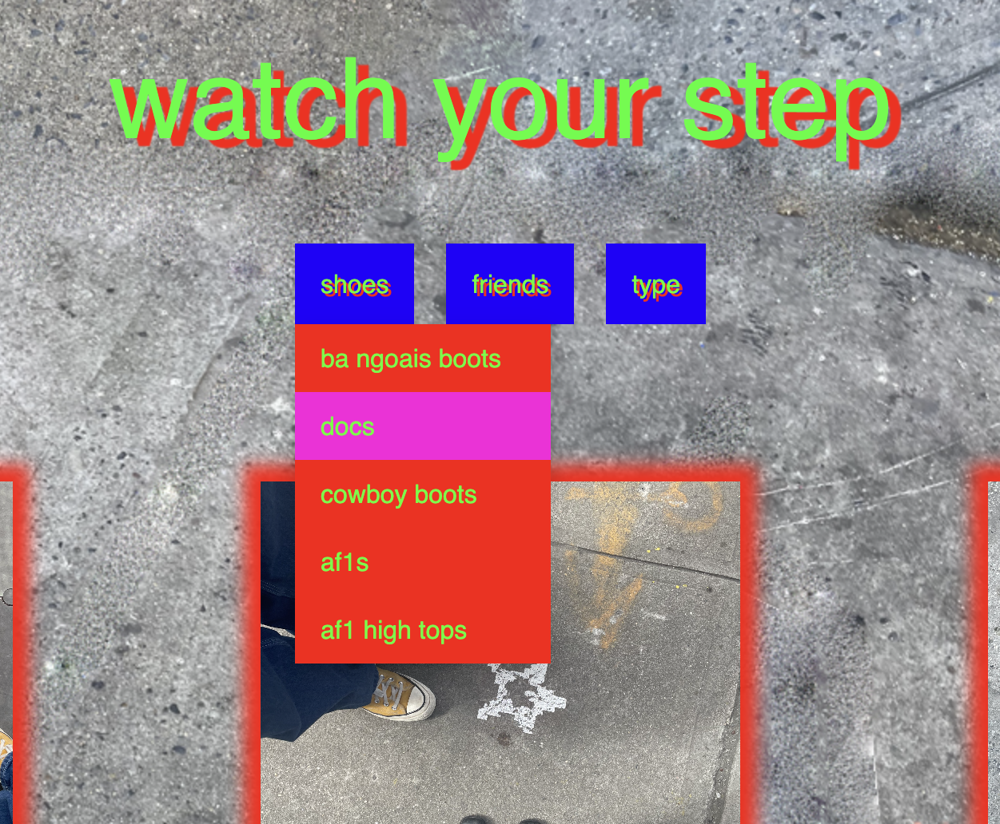
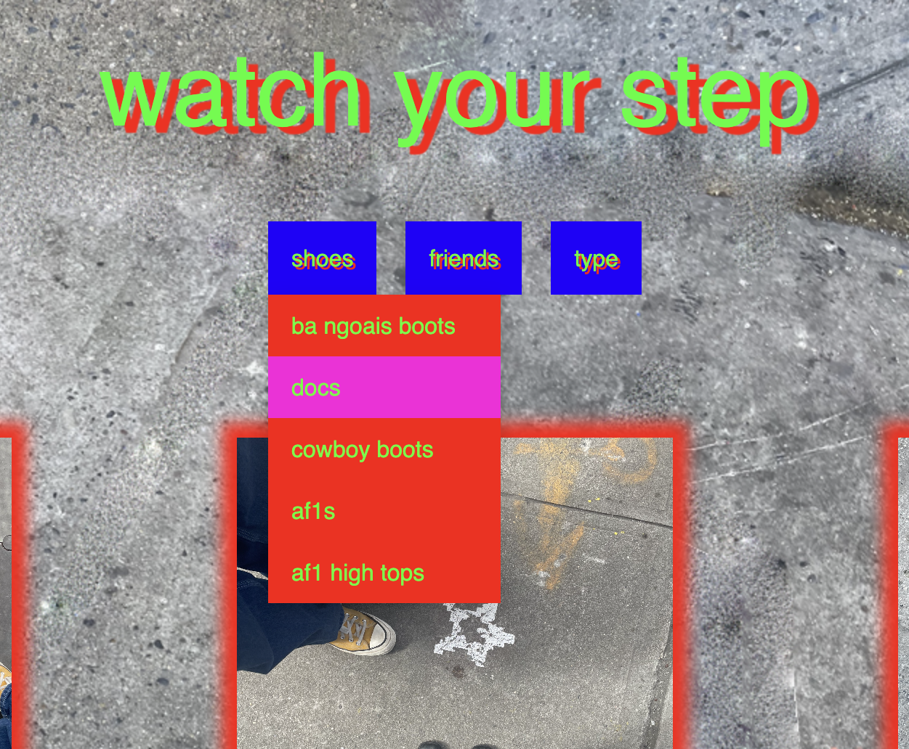

Watch Your Step is a collection of imagery and unique sightings from the streets of NYC. It showcases the types of things we can miss when walking along seemingly boring pavements.

The site has many interesting early 2000s online graphics that evoke a sense of nostalgia and humour. There is even a under construction sign!
 

Shown here are a few highlights of the websites features! including the dropdown menu that toggles through the different types of images and an underconstruction sign.

In case you want to take a look on your phone that is totally an option as well!